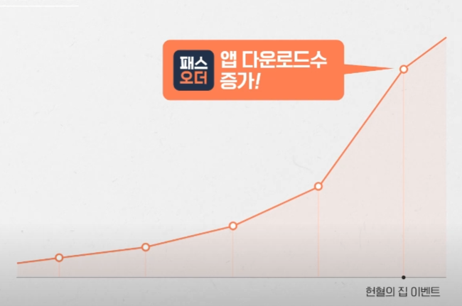

2023. 05. 03
- 영상 : 그로스해킹팀 나유경
- 초기에는 3만명에서 100만명이 넘는 패스오더 유저 확보 (2022. 12. 12 기준)
팀 리더의 역량
- 좋은 의사 결정 * 회사의 방향과 서비스에 대한 이해가 전제 되어야 한다.
- 팀의 퍼포먼스를 끌러올리기 * 팀원들의 동기부여, 전체적인 그림 그리기, 좋은 인재 채용 등
신규 유저 확보를 위해 우편으로 패스오더를 뿌림 \(\to\) 1차 테스트에서는 위험 부담을 최소화 하기위해 20개의 오피스 상권에 뿌림
2차 테스트는 50개, 성과는 그럭저럭
전국 단위로 뿌리면서 배운점은 실패를 하더라도 확실하게 실패를 해야 앞으로 나아갈 수 있다. \(\to\) 속도와 규모의 중요성
헌혈의 집 이벤트
- 속도와 규모를 다 챙긴 사례

- 앱 다운로드 수가 폭발적으로 증가를 했고, 앱 스토어 상위권에도 오름
- 핏이 아쉬웠음 * 패스오더를 잘 쓰지 않는 사람한테도 지급됨, 리텐션 그래프를 보아도 이탈자가 대부분 많았음. * 데이터에 기반하여 고객과 사장님의 유저 입자을 고려한 의사결정을 하려고 한다…
성장 노하우
- 경험한 후에 회고 * 본인이 한 일에 데이터를 남기자
- 개인과 팀 목표가 회사의 목표와 맞닿아 있어야 한다. * 주어진 일 + 열정 + 깊은 이해 = we win * 개인과 회사의 목표가 겹치는 부분을 넓히면 we win이 된다.
패피들의 마음 가짐
내 마음대로 한계를 만들지 말자…. \(\to\) 정말 좋은말인 것 같다. 요즘 한계를 너무 만드는 듯,,,
용어정리
pivoting : 스타트업이 신제품을 출시 한 이후 시장의 반응을 체크하고, 문제가 있을 시 다른 사업 모델로 전환하는 것을 지칭함.
series A, B, C : 특정 투자 개념을 공유하는 명칭
A : 시장의 검증을 거친 뒤 시제품을 가진 기업들이 series A 투자의 대상이됨
B : 기업을 빌드업 하는 단계, 개발 단계를 지나 다음 단계로 비즈니스를 펼치는 단계로, 투자자들은 피투자 기업이 시장에 진출할 수 있도록 시장을 넓혀주는 등 지원활동을 펼친다.
C : 새로운 제품 개발과 신시장 진출, 다른 회사의 인수, 이를 위한 추가 자금 모집 등의 단계이다.
CRM 마케팅 (Customer Relation Management) : 고객과의 상호작용을 기반으로 하는 고객 관계 경영 마케팅
리텐션(Retention) : 고객 유지 정보라고 생각하자.
do next
개인과 회사의 목표가 겹치는 부분을 찾아보자.
현재 어플을 사용해 본 결과 사장님이 패스오더를 사용해서 주문을 받는데도 해당 어플을 사용하는 유저가 없어 내가 처음이라고 했다… 카페 사장님한테 한번 물어보자. 어떻게 패스오더를 사용하게 되었는지! \(\to\) 단순히 가맹점이여서 그런가…??
2023. 05. 04
- 영상 : 그로스해킹팀 이주현
페이타랩을 선택한 이유
회사 = 앞으로 나아가야할 비전, 가치관을 드러내는 곳
페이타랩은 짧은 업력을 가지고 있지만 신규 투자 유치를 빠르게 드러냄
- 이유 : 자영업 시장의 IT화 선도라는 목표와 구성원들의 끝없는 고민의 결과!
걷고 있는 회사보다 앞만 보고 달리는 회사에 합류하고 싶었다.
면접이 한 시간 진행되었는데 지원자를 편하게 알아가려고 하는 느낌이 있었음
첫 업무
컨텐츠 마케팅 업무를 담당
다른 직원들의 히스토리를 살펴보고 전체적인 업무를 파악
트렌드 파악, 타사 레퍼런스 조사, 관련 서적 공부
데이터 추출
처음에는 데이터 추출과정이 너무 복잡했음
당위성과 필요성을 입증하여서 자유롭게 데이터를 확인할 수 있는 환경을 구축함.
비효율적인 업무환경을 바꿈으로서 스스로 인정을 받음
먼가 SQL을 나도 따로 공부해야할 것 같당
케이스 스터디를 통해 인사이트를 발굴
성장 비결
콘텐츠 기획 = 메시지 카피 = 사람의 마음을 움직인느 힘 \(\to\) 버튼 위치조차도 인사이트 도출이 된다…
노력하는 과정 자체가 성장의 원동력이자 능동적인 태도의 핵심이된다.
패피들의 마음가짐
꾸준함, 역시 관성의 법칙은 최고얌
성장을 원하고 프로답게 일하고 싶은 분들이 모이고 있다.(서로 공유하는 문화가 강한 것 같다.)
자유로운 피드백, 의사결정은 의사결정권자들이 담당 \(\to\) 실무자들에게 책임전가를 하지않아 자유로운 의견 제시, 물론 무조건 책임이 없진 않음…
패피들의 이야기
- 결국 회사와 내가 필요충분조건이 성립해야함!!
본인의 목표
- CRM 팀의 팀리더! \(\to\) special one이 아닌 only one이 되자!
용어정리
데이터 드리븐(데이터 드리븐) : 주관적 경험이 아닌 데이터 분석을 기반으로 의사결정을 하는 것
케이스 스터디(Case Study) : 구체적인 사례를 분석하고 해석하여 가설을 검증하는 일